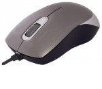

dpi (dots of cursor montion per inch – точек на дюйм) – то же что и cpi (counts per inch – количеств она дюйм). В статье будем использовать первое — более популярное. То есть разрешение мышки – это количество шагов, которые проделывает мышка на 1 дюйм. Подчеркиваю, движение мышки на 1 дюйма, а не курсора. Один шаг – один сигнал мышки. Выходит, чем больше dpi, тем более плавно она передвигается.
Но тут следует учесть еще один параметр – скорость опроса порта. Сегодня высшая планка – 1000 герц (сигналов) на секунду. То есть если вы за 1 секунду проедите 2 дюйма, в теории мышка передаст не меньше 2000 сигналов. Но контроллер все равно передаст в два раза меньше – 1000. Выходит на плавность движения dpi с такой частотой опроса USB не влияет. Зачем тогда dpi?
Разрешение мышки влияет на скорость перемещения курсора на экранах с большим расширение (больше чем 1600х1200). Чем большее разрешение, тем большее расстояние должна пройти мышь. Разница ощутима только для геймеров и для тех, кто работает с графикой. Большинство из них сходятся на том, что dpi/cpi 1600 предостаточно.
Когда-то для разрешения экрана меньше, чем 1200х800 было достаточно 400-600 dpi. Сегодня средний показатель разрешения дисплея 1600х900, соответственно 1000 dpi в самый раз. Если 2560х1500 — тогда можно и 1600 dpi. Если вы не геймер или дизайнер, тогда просто покупайте мышку со средним на сегодня показателем – 1000 dpi/cpi